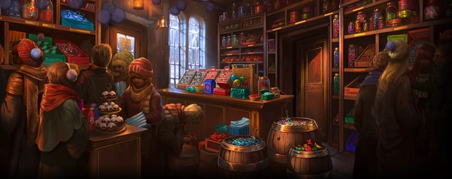

"Havia prateleiras e mais prateleiras de doces com a aparência mais apetitosa que se pode imaginar. Tabletes de nugá, quadrados cor-de-rosa de sorvete de coco, caramelos cor de mel; centenas de tipos de bombons em fileiras arrumadinhas; havia uma barrica enorme de feijõezinhos de todos os sabores, Delícias gasosas – as tais bolas de sorvete de fruta que faziam levitar que Rony mencionara –, em outra parede havia os doces de “efeitos especiais”: os melhores chicles de baba e bola (que enchiam a loja de bolas azulonas e se recusavam a estourar durante dias), o estranho e quebradiço fio dental de menta, minúsculos Diabinhos negros de pimenta (“sopre fogo em seus amigos!”), Ratinhos de sorvete (“ouça seus dentes baterem e rangerem!”), Sapos de creme de menta (“faça sua barriga saltar para valer!”), frágeis penas de algodão-doce e bombons explosivos."